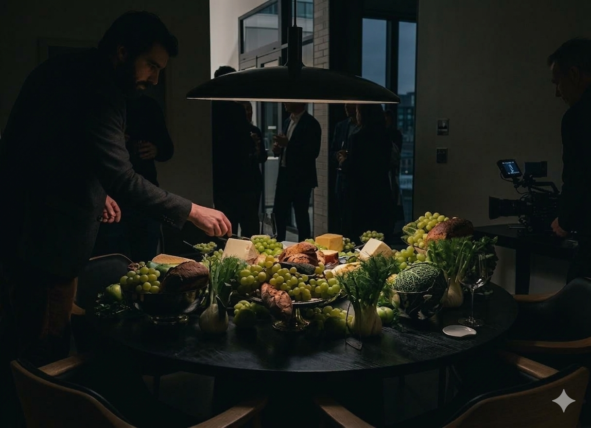
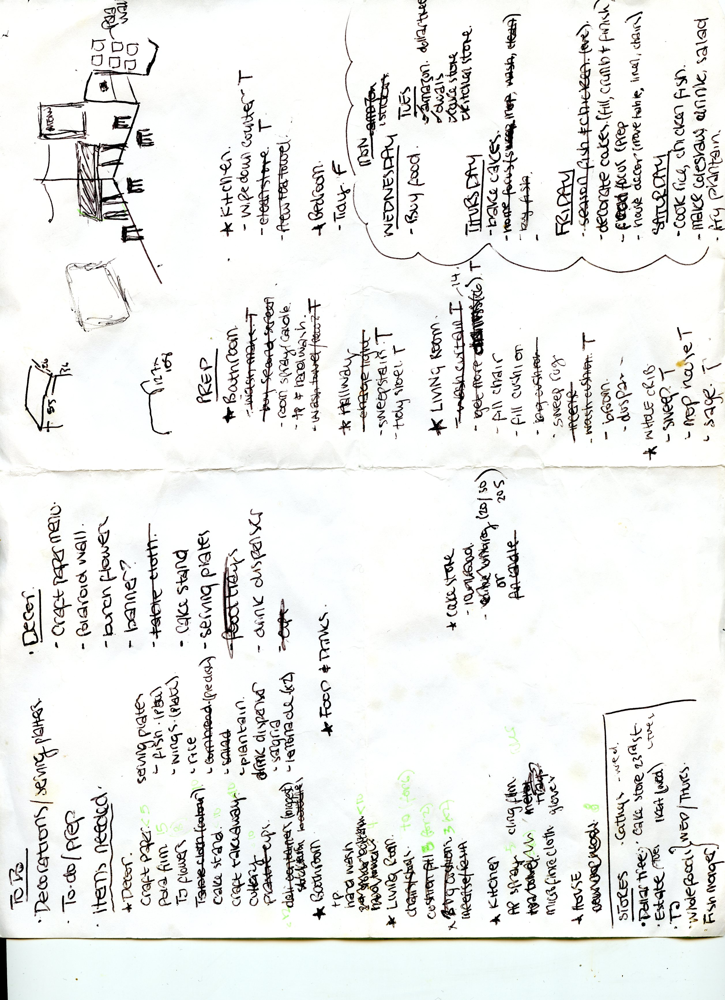

My creativity tends to emerge in three places: on set, behind the decks, and around a table. Each space invites a different kind of storytelling—through visuals, sound, or food—but all share the same intention: bringing people together through thoughtful experiences.

While modeling introduced me to the creative vision, production taught me how to build it. My work as a Production Assistant in the culinary and design space is a study in the "invisible labor" of beauty. From the logistical rigour of load-ins to the delicate styling of beautifully adorned tablescapes, I’ve learned that a truly immersive experience is a choreography of aesthetics and organization.
Visual recreated using Google Gemini to enhance original low-res reference.
Music is how I process and share culture. As a DJ, I treat sound as a narrative—mapping how energy moves through a room and how one track can bridge cultural gaps. I am currently exploring the profound influence of Black Britons within UK music genres, using rhythm to tell stories that resonate both locally and globally.

The table is where food, music, and conversation intersect. I approach hosting like production—using prep-lists as scripts and ingredients as visuals to curate meaningful community experiences. It is the ultimate space for sensory storytelling.